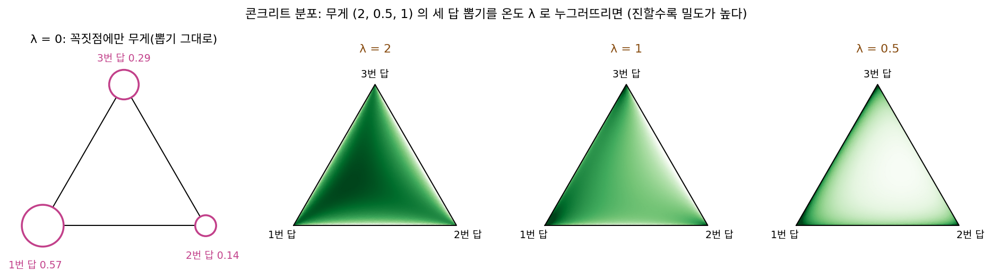
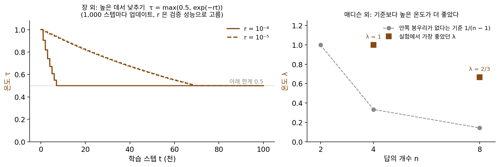
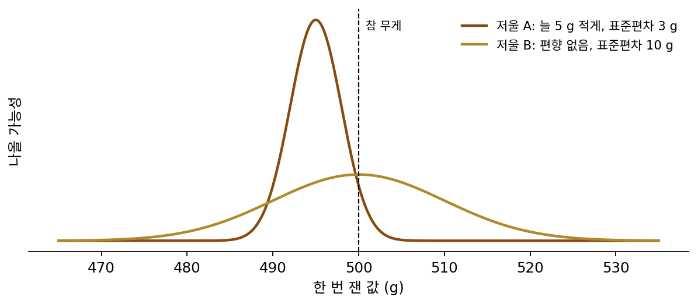

검벨 소프트맥스: 칸 뽑기를 누그러뜨려 미분하기
네 칸 메모리 장난감을 다시 보자. 에피소드마다 메모리 네 칸에 표준정규분포에서 뽑은 수가 들어오고 정답은 3번 칸 값의 두 배인데, 모델은 로짓 θ 의 소프트맥스로 칸 하나를 뽑아 그 칸의 값에 w 를 곱해 내놓는다. 칸을 뽑는 자리에서 미분이 끊기므로 정책 그래디언트는 그 자리에 손실의 값을 대신 보냈다. θ = 0, w = 1 에서 ∂J/∂θ₃ 의 참값은 −0.75 인데, 에피소드 16개로 한 번 추정하기를 2,000번 되풀이하면 평균은 −0.745 로 맞지만 표준편차가 0.450 이다. 한 번의 추정값이 참값의 절반이 넘는 크기로 오르내린다.
뽑기가 연속일 때는 이 표준편차를 줄일 방법이 있었다. 정규분포에서 z 를 뽑는 대신 z = μ + ε 로 고쳐 적어 노이즈 ε 를 바깥으로 빼내면, z 는 μ 에 매끄럽게 달린 식이 되어 역전파가 뽑기를 지나간다(재파라미터화). E[z²] 를 μ 로 미분하는 예에서 샘플 하나짜리 추정값의 표준편차가 5.45 에서 2.00 으로 줄었다. 그런데 1번 칸과 2번 칸 사이에 1.5번 칸은 없으니, 칸 번호는 「평균 + 노이즈」로 적을 수 없다. 칸을 고르는 뽑기에서도 노이즈를 바깥으로 빼내 역전파가 지나가게 할 수 있을까? 할 수 있다면 무엇을 내주게 될까?
역사: 매디슨과 장이 하루 차이로 칸 뽑기를 누그러뜨리다
2016년 무렵 신경망 안에 확률적인 계산을 넣는 연구자들은 연속과 이산 사이의 차이를 크게 느끼고 있었다. 2013~2014년에 킹마와 웰링, 레젠데와 동료들이 재파라미터화를 내놓은 뒤로 정규분포 같은 연속 뽑기는 자동 미분이 「그냥 돌아가는」 계산이 되었고, 크리스 매디슨(Chris J. Maddison)과 동료들은 이것이 크고 복잡한 확률 모델을 짜는 연구자들을 풀어 주었다고 적었다. 그런데 몇 가지 가운데 하나를 고르는 이산 뽑기에는 쓸 만한 재파라미터화가 없었다. 이산 뽑기를 낀 모델은 점수 함수로 그래디언트를 추정하고, 그 분산을 줄이는 기준값을 이리저리 붙여 학습했다. 안드리 므니(Andriy Mnih)는 그런 추정법 NVIL(2014)과 VIMCO(2016)를 동료와 함께 낸 사람이었고, 구스샹(Shixiang Gu)도 므니 등과 함께 MuProp(2016)이라는 추정법을 냈다.
2016년 11월 2일, 매디슨과 므니, 이 와이 테(Yee Whye Teh)는 arXiv 에 「콘크리트 분포: 이산 확률 변수의 연속 누그러뜨림(The Concrete Distribution: A Continuous Relaxation of Discrete Random Variables)」을 올렸다. 콘크리트라는 이름은 「연속(CONtinuous) 누그러뜨림」과 「이산(disCRETE)」의 글자를 이어 붙인 것이다. 다음 날 에릭 장(Eric Jang)과 구스샹, 벤 풀(Ben Poole)이 「검벨 소프트맥스를 쓴 범주 재파라미터화(Categorical Reparameterization with Gumbel-Softmax)」를 올렸다. 장의 논문은 같은 분포를 매디슨 팀이 따로 찾아 콘크리트 분포라 불렀다고 적었고, 매디슨의 논문도 장 팀이 같은 누그러뜨림을 함께 생각했다고 적었다. 두 논문은 이듬해 ICLR 에 함께 실렸다.
두 팀이 쓴 재료는 새것이 아니었다. 로짓에 노이즈 −log(−log u) 를 더해 가장 큰 칸을 고르면 소프트맥스 확률대로 뽑힌다는 사실은 1950~70년대의 선택 이론 연구까지 거슬러 올라가고, 매디슨도 2014년에 동료들과 이 꾀를 넓혀 샘플을 뽑는 「A* 샘플링」 논문을 낸 적이 있었다. 그 노이즈가 따르는 분포는 여럿 가운데 가장 큰 값의 통계(극값 이론)에 나오는 검벨 분포로, 장의 논문은 에밀 검벨(Emil J. Gumbel)의 1954년 강의록을 출처로 든다. 두 팀이 더한 것은 「가장 큰 칸 고르기」를 온도가 있는 소프트맥스로 바꾸는 일이었다.

그 바꿈에는 온도를 정하는 문제가 따라왔다. 장의 논문은 온도가 낮으면 샘플이 한 답에 몰리지만 그래디언트의 분산이 크고, 높으면 샘플이 퍼지는 대신 분산이 작다고 적었다. 그래서 높은 온도에서 시작해 0 이 아닌 작은 온도까지 낮추었는데, 그림을 작은 잠재 변수로 줄였다가 되살리는 VAE 실험에서는 τ 를 max(0.5, exp(−rt))(t 는 학습 스텝)로 정하고 r 과 낮추는 간격을 검증 성능으로 골랐다. 매디슨 팀은 온도가 높으면 누그러뜨린 뽑기가 삼각형 안쪽의 실수 값으로 정보를 실어 나르게 되어, 학습할 때는 좋아 보여도 실제로 한 칸만 뽑는 시험에서 성능이 떨어질 수 있다고 걱정했다. 그들은 답이 n 개일 때 λ ≤ 1/(n − 1) 이면 안쪽에 봉우리가 생기지 않는다는 것을 보였지만, 실험에서는 답이 넷일 때 λ = 1, 여덟일 때 λ = 2/3 이 가장 좋았다. 결국 「그 언저리에서 시작해 문제마다 찾아보라」고 권했다. 비교 실험에서도 결과는 한쪽으로 기울지 않았는데, 선형 모델에서는 므니의 VIMCO 가 이기고 비선형 모델에서는 콘크리트가 이겼다.


므니가 자기가 만든 VIMCO 를 상대로 비교한 거네요. 진 결과까지 그대로 적었고요.

그래서 이 논문들을 읽으면 무엇이 확실하고 무엇이 아직 손으로 고르는 것인지가 보여요. 온도를 어떻게 골라야 하는지는 두 팀 모두 한 줄 규칙으로 답하지 못했어요.

온도를 낮추면 분산이 커진다는 건 알겠는데, 높이면 뭐가 나빠지는 거예요? 매디슨 팀은 시험 성능을 걱정했다고 했잖아요.
네 칸 메모리 장난감에서 직접 재 봐요. 칸이 넷뿐이니 참값을 알고 있잖아요.
세 답에서 한 답 뽑기
칸 번호를 고르는 뽑기에서도 노이즈를 바깥으로 빼낼 수 있다. 세 답을 확률 p = (0.6, 0.3, 0.1) 로 고르는 경우를 보자. 답마다 로짓 log pₖ 에 노이즈 Gₖ = −log(−log uₖ)(uₖ 는 0 과 1 사이에서 고르게 뽑은 수)를 따로 더하고 가장 큰 답을 고르면, k 번 답이 뽑힐 확률이 pₖ 와 같다. 이 노이즈가 따르는 분포를 검벨 분포라 하고, 이렇게 뽑는 법을 검벨-맥스 꾀(Gumbel-max trick)라 한다. 씨앗 41 로 뽑은 노이즈 (3.059, 1.332, −0.728) 를 로짓 (−0.511, −1.204, −2.303) 에 더하면 (2.548, 0.128, −3.031) 이라 1번 답이 뽑히고, 100만 번 되풀이하면 세 답의 빈도가 (0.600, 0.300, 0.100) 이다.
노이즈는 바깥으로 나왔지만 「가장 큰 답 고르기」는 계단이라, 로짓을 조금 움직이면 고른 답이 그대로이거나 갑자기 바뀐다. 그래디언트는 거의 어디서나 0 이다. 그래서 가장 큰 답에만 1 을 주는 대신, 「로짓 + 노이즈」를 온도 τ(타우)로 나눠 소프트맥스에 넣은 무게 a 를 쓴다. 온도라는 이름은 통계물리의 볼츠만 분포에서 왔고, 나누는 수가 작을수록 무게가 가장 큰 값 쪽으로 쏠린다.
같은 노이즈에서 τ = 1 이면 a = (0.915, 0.081, 0.003), τ = 0.1 이면 (1.000, 0.000, 0.000) 이다. a 는 θ 에 매끄럽게 달려 있으니 역전파가 지나간다. 범주 뽑기(칸 번호처럼 몇 가지 가운데 하나를 고르는 뽑기)를 이렇게 누그러뜨려 역전파하는 방법을 검벨 소프트맥스 (검벨 노이즈를 더한 로짓을 온도 있는 소프트맥스로 누그러뜨린 뽑기 / Gumbel-softmax)라 한다.
네 칸 메모리 장난감에서는 칸을 뽑는 대신 ŷ = w·Σ aₖmₖ 를 읽고 손실을 θ 까지 역전파한다. 처음에 본 점수 함수 추정과 같은 조건(θ = 0, w = 1, 에피소드 16개로 한 번 추정하기를 2,000번)에서 ∂J/∂θ₃(참값 −0.75)의 추정은 다음과 같다.
| ∂J/∂θ₃ 을 추정하는 법 | 2,000번의 평균 ± 표준편차 |
|---|---|
| 점수 함수(손실의 값만 씀) | −0.745 ± 0.450 |
| 검벨 소프트맥스, τ = 1 | −0.521 ± 0.222 |
| 검벨 소프트맥스, τ = 0.5 | −0.660 ± 0.373 |
| 검벨 소프트맥스, τ = 0.1 | −0.742 ± 0.991 |
점수 함수는 평균이 참값에 맞지만 크게 흔들린다. 검벨 소프트맥스는 손실의 미분을 쓰므로 τ = 1 에서 표준편차가 절반으로 줄지만, 평균이 −0.52 로 참값에서 비켜 있다. 여러 번 추정해 평균한 값이 참값에서 벗어난 크기를 편향이라 하는데, 점수 함수는 편향이 0 이고 τ = 1 의 검벨 소프트맥스는 편향이 0.23 쯤이다. 편향이 생기는 것은 누그러뜨린 a 로 읽은 값이 여러 칸을 섞은 값이고, 섞어 읽은 손실은 한 칸을 읽는 손실과 다른 함수이기 때문이다(θ = 0 에서 섞어 읽은 손실의 평균은 τ = 1 에서 3.42, J 는 4). τ 를 낮추면 섞임이 줄어 편향도 줄지만, 소프트맥스가 가팔라져 τ = 0.1 에서는 표준편차가 0.99 로 점수 함수보다 커진다. 매디슨과 장이 손으로 골랐던 온도 τ 는 편향과 분산을 맞바꾸는 값이었다. 이 맞바꿈은 모델의 크기를 고를 때도 같은 꼴로 나타나서, 이 책은 일반화를 다루며 「과녁과 화살」 그림과 함께 편향–분산 트레이드오프라는 이름으로 다시 만난다. 그렇다면 편향이 있지만 덜 흔들리는 추정과, 편향은 없지만 많이 흔들리는 추정 가운데 어느 것이 참값에 더 가까울까?

0차와 1차 사이에 놓고 보면 두 방법은 끊긴 자리에 보내는 신호가 다르다. 정책 그래디언트는 끊긴 자리에 손실의 값을 보내는 0차 쪽 다리이고, 검벨 소프트맥스는 끊긴 자리를 매끄러운 계산으로 바꿔 미분을 보내는 1차 쪽 다리다. 다만 검벨 소프트맥스로 학습하는 동안 모델은 한 칸이 아니라 섞인 값을 읽는다. 다 만든 모델처럼 꼭 한 칸만 읽어야 하면, 앞으로 계산할 때는 가장 큰 칸 하나를 읽고 거꾸로 올 때만 a 의 미분을 쓰는 변형이 있다. 장의 논문은 이를 스트레이트-스루(straight-through) 검벨 추정이라 불렀다.
ML에서: 그림을 토큰으로 바꾸는 DALL·E 의 인코더
장의 논문은 손글씨 숫자 그림의 일부에만 정답 숫자가 붙은 학습에서, 정답이 없는 그림마다 가능한 정답을 모두 넣어 계산하는 대신 정답 하나를 검벨 소프트맥스로 뽑아 학습했다. 시험 그림의 분류 정확도는 모두 넣어 계산한 92.6% 와 비슷한 92.4% 였고, 학습 속도는 정답 후보가 10개일 때 2배, 100개일 때 9.9배 빨랐다고 보고했다.
더 큰 쓰임은 2021년 오픈AI 의 아디티야 라메시(Aditya Ramesh)와 동료들이 글로 그림을 그리는 DALL·E 를 만들 때 나왔다. 트랜스포머가 그림을 글처럼 토큰으로 다루려면 256 × 256 크기의 그림을 32 × 32 격자의 토큰으로 바꿔야 했고, 토큰 하나는 8,192 가지 가운데 하나다. 그림을 토큰으로 줄였다가 되살리는 이 오토인코더의 인코더는 격자 자리마다 로짓 8,192 개를 내고 그 가운데 하나를 고르므로, 1,024 자리 모두에서 뽑기가 미분을 끊는다. 먼저 나온 VQ-VAE 계열은 이 뽑기를 스트레이트-스루 추정으로 넘었는데, DALL·E 팀은 검벨 소프트맥스를 골랐다. 그리고 첫 15만 스텝 동안 온도를 1 에서 1/16 까지 낮췄다. 논문에 따르면 1/16 이면 검증 그림에서 누그러뜨린 뽑기로 잰 학습 목표와 한 칸씩 골라 잰 학습 목표의 차이가 메워졌고, 온도를 일정한 속도로 줄이면 학습이 자주 발산했다. 매디슨 팀이 걱정한 「학습 때와 시험 때의 차이」가 8,192 가지 뽑기에서 나타났고, 이번에도 온도는 실험으로 골랐다.
문제 16. 온도를 고르는 문제
빵 반죽 한 덩이를 저울로 다는데, 저울 A 는 늘 5 g 적게 나오고 잴 때마다 표준편차 3 g 으로 흔들리며, 저울 B 는 평균이 참 무게와 같고 표준편차가 10 g 이다. (가) 한 번 잰 값의 오차 제곱 평균(편향² + 분산)은 저울마다 얼마인가? 같은 덩이를 열여섯 번 재어 평균하면 어떻게 되는가? (나) 네 칸 메모리 장난감(θ = 0, w = 1, 참 ∂J/∂θ₃ = −0.75)에서 에피소드 하나로 ∂J/∂θ₃ 을 추정한 값을 400만 개 모아 편향과 분산을 재면 다음과 같다. 점수 함수는 편향 0, 분산 3.367. 검벨 소프트맥스는 τ = 2 에서 편향 0.415, 분산 0.258, τ = 1 에서 0.223, 0.832, τ = 0.5 에서 0.080, 2.324, τ = 0.1 에서 0.002, 15.87 이다. 에피소드 16개로 한 번 추정할 때 오차 제곱 평균이 가장 작은 것은 무엇인가? (다) 한 스텝에 에피소드 256개를 미니배치로 쓰면 어느 것이 가장 좋은가? 미니배치가 커질수록 고를 τ 는 어느 쪽으로 가는가?

(가)는 바로 되네. A 는 5² + 3² = 34, B 는 10² = 100. 한 번만 잰다면 늘 5 g 모자라는 A 가 나아.

열여섯 번 재서 평균하면 분산만 16 으로 나뉘니까 A 는 25 + 9/16 ≈ 25.6, B 는 100/16 = 6.25. 이번엔 B 가 네 배쯤 작아.
A 의 25 는 왜 줄지 않았죠?
열여섯 번 모두 5 g 씩 적게 나오니까요. 평균을 내도 5 g 모자란 건 그대로예요.

(나)도 같은 계산이에요. 에피소드 16개로 한 번 추정하면 무엇이 16 으로 나뉘는지부터 정해 봐요.

계산하기 전에 하나 걸리는 게 있어요. 참값을 겨누는 건 점수 함수 하나뿐이고, τ = 0.1 도 편향이 0.002 라 거의 없잖아요. 그래디언트를 맞게 추정하려는 거면 편향이 없는 둘 가운데서 골라야 할 것 같은데요.

일단 넣어 볼게. 분산만 16 으로 나누면 점수 함수는 3.367/16 = 0.210, τ = 0.1 은 15.87/16 = 0.992. τ = 2 는 0.415² + 0.258/16 = 0.172 + 0.016 = 0.188, τ = 1 은 0.050 + 0.052 = 0.102, τ = 0.5 는 0.006 + 0.145 = 0.152.

편향이 0.223 이나 되는 τ = 1 이 0.10 으로 가장 작고, 내가 고르려던 τ = 0.1 이 0.99 로 가장 크네. 저울 A 와 같은 처지였어. 한 번 잰 값끼리 비교하면 조금 비켜 있어도 덜 흔들리는 저울이 참값에 더 가깝구나.
학습에서 한 스텝이 쓰는 것은 그 한 번의 추정값이니까요. 에피소드 16개짜리 스텝이라면 τ = 1 이 점수 함수의 절반쯤 되는 오차로 방향을 줘요. 그럼 미니배치를 에피소드 256개로 키우면 (가)의 무엇과 같아지죠?
같은 반죽을 여러 번 재서 평균하는 거요? 그럼 분산만 256 으로 나뉘겠네요. 점수 함수 3.367/256 = 0.0132, τ = 0.5 는 0.0064 + 0.0091 = 0.0155, τ = 1 은 0.0496 + 0.0033 = 0.0528, τ = 0.1 은 0.062.

이번엔 점수 함수가 가장 작아요. τ = 1 은 에피소드를 아무리 모아도 편향² 0.0496 아래로 못 내려가고요.

그 사이는 어떨까. 64개면 점수 함수 3.367/64 = 0.0526, τ = 0.5 는 0.0064 + 0.0363 = 0.0427, τ = 1 은 0.0496 + 0.0130 = 0.0626. 64개에서는 τ = 0.5 가 가장 작아. 미니배치가 16, 64, 256 으로 커지면 가장 나은 것이 τ = 1, τ = 0.5, 점수 함수 순으로 옮겨 가네.

그래서 온도에는 모든 경우에 맞는 값이 없어요. 한 스텝에 모으는 에피소드가 적으면 높은 온도로 분산을 누르는 것이 이득이고, 많으면 분산은 평균이 줄여 주니 편향을 줄이는 낮은 온도가 낫고, 아주 많으면 편향이 없는 점수 함수가 이겨요. 매디슨 팀이 한 줄 규칙 대신 「문제마다 찾아보라」고 권한 사정이 네 칸 메모리 장난감에서도 보이죠.